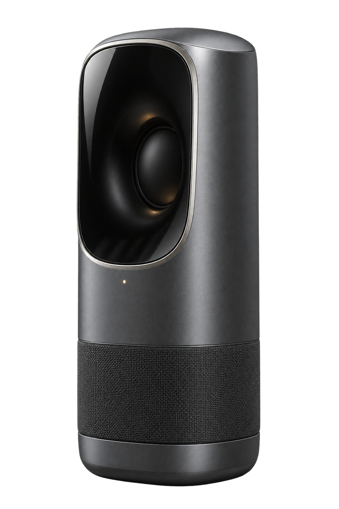
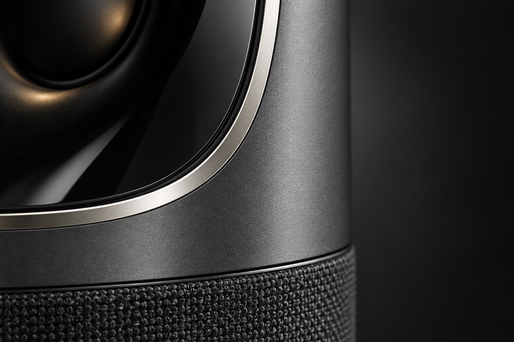
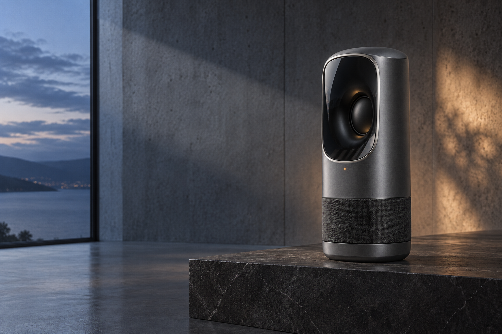

Graphite aluminiumBlack glass apertureWoven acoustic textile

RUNE / OBJECT STUDY / GRAPHITE


RUNE / OBJECT STUDY / GRAPHITE

RUNE 01 / LISTENING OBJECT
One compact object shaped to sit inside architecture, not compete with it.
Enter the room →COMPACT SPATIAL SPEAKER
SPATIAL SPEAKER / GRAPHITE
01 / FORM
OBJECT / GRAPHITE
A compact spatial speaker with an aluminium shell, glass aperture and woven acoustic base.
ACOUSTIC OBJECT / PLATE 01
Archive note
A vertical body reduces the visual footprint while keeping every material junction visible.
Read the object ↗FORM / GLASS / TEXTILE
SPATIAL OBJECT / 01
The object stays still. The listening field opens around it.
Enter the field →BLACK GLASS / GRAPHITE / AMBER SIGNAL
THE LISTENING OBJECT
RUNE 01 reduces the speaker to three legible materials and one calm vertical silhouette.
Read the study ↗The black glass aperture gives the speaker one clear face. Its polished rim catches only enough light to reveal the edge.
Below, woven textile turns the base into an acoustic surface rather than a decorative plinth.
COMPACT SPATIAL SPEAKER
Graphite aluminium, black glass and woven textile held inside a single vertical form.
Move closer ↓01 / GRAPHITE
RUNE / MATERIAL STUDY
SPATIAL SPEAKER / OBJECT 01
A compact speaker designed as part of the room: aluminium shell, glass aperture, woven acoustic base.
Explore RUNE 01 →View materialsA fictional product used to demonstrate code-faithful direction exploration.